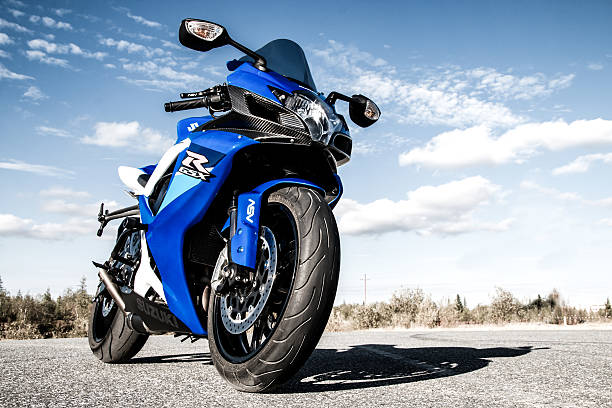

Suzuki
Suzuki Motor de Colombia S.A. se reserva los derechos a cambios sin previo aviso, en equipos, especificaciones, colores, materiales, y otros; para aplicaciones en condiciones locales. Cada modelo podría ser descontinuado sin previo aviso. Por favor consulte con su distribuidor local para detalles de algunos de esos cambios. Aquí encontrará el catálogo de promociones activas.
Cotiza más >>